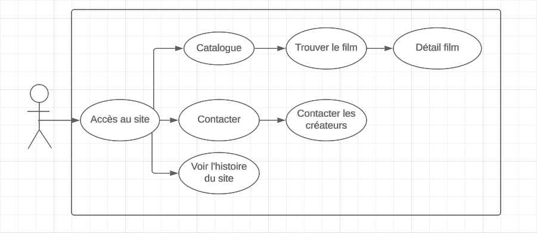
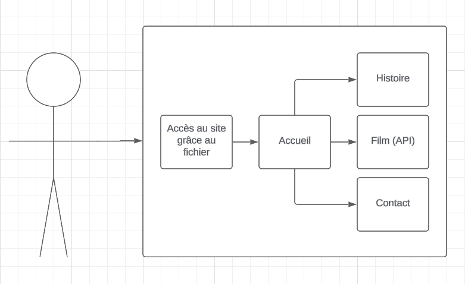

Voici l'histoire du site
1 - Nous avons commencer par faire les diagrammes.
Le diagramme des cas d'utilisations :
Le diagramme de bloc :
2 - Nous avons ensuite fait la charte graphique.
La palette de couleurs
Noir #000000
Blanc #fff
Rouge #e70e0e
La typographie